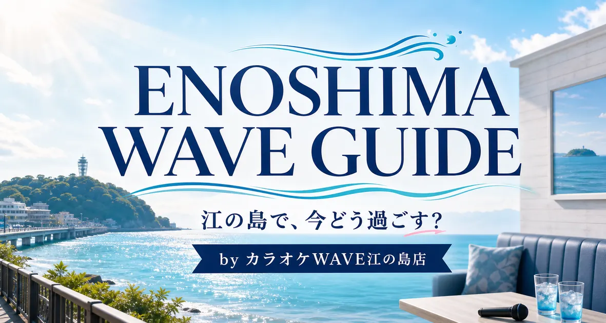

VIEW LIVE SITE ↗CASE 01 / LOCAL & TOURISM
カラオケWAVE江の島店
店舗サイトを、江の島観光の入口へ。
料金や設備だけを並べる店舗ページから、江の島・鎌倉・江ノ電観光の記事を持つ地域メディア型サイトへ拡張。観光客には「休憩・雨・暑さ・空き時間」の使い方を提案し、地域客には料金・駐車場・設備を分かりやすく伝える構成です。
- 目的
- 来店発見 / 観光検索流入 / リピーター獲得
- 設計
- 店舗情報と観光記事を同一ドメインに集約
- 実装
- 多言語記事 / 料金 / 地図 / 電話・SNS導線 / 計測基盤